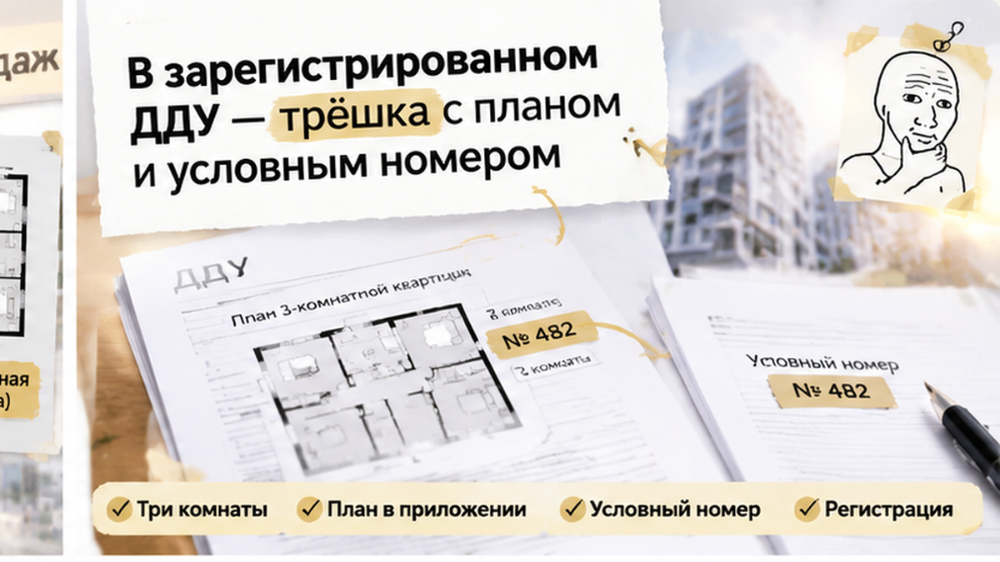
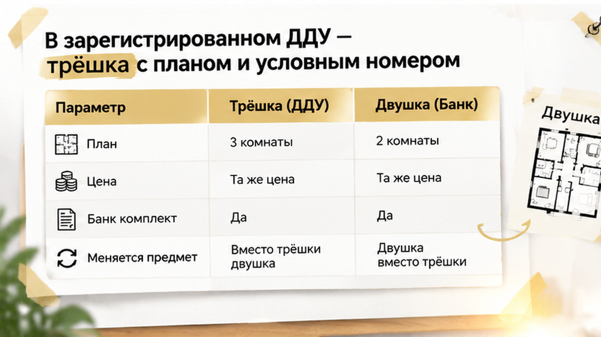
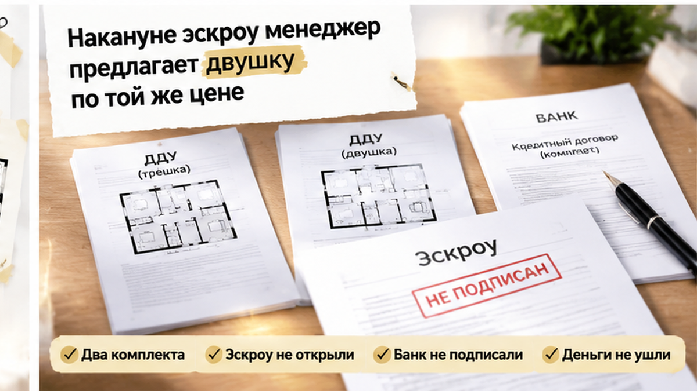
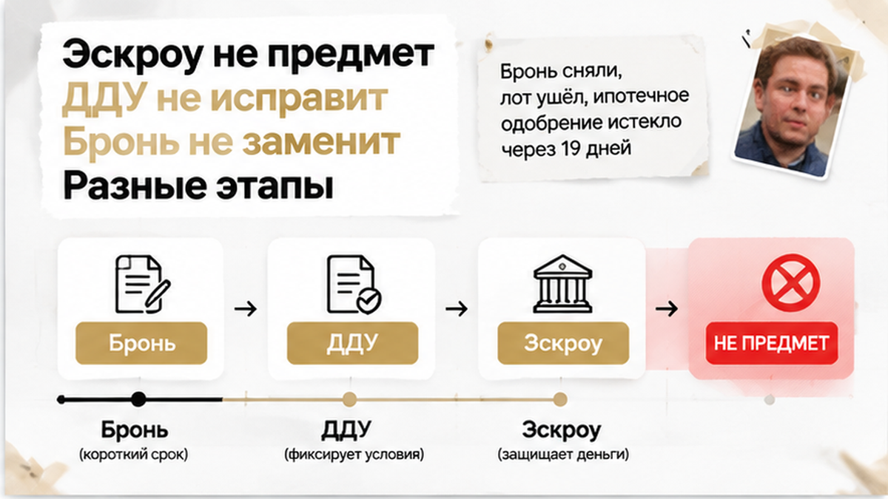
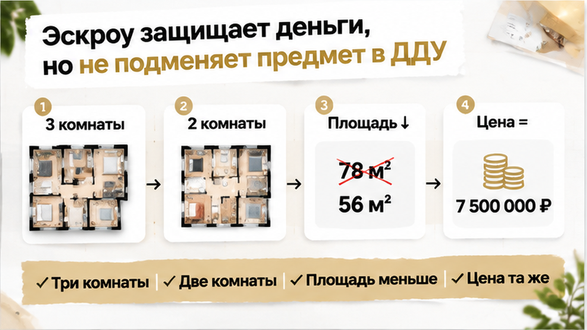
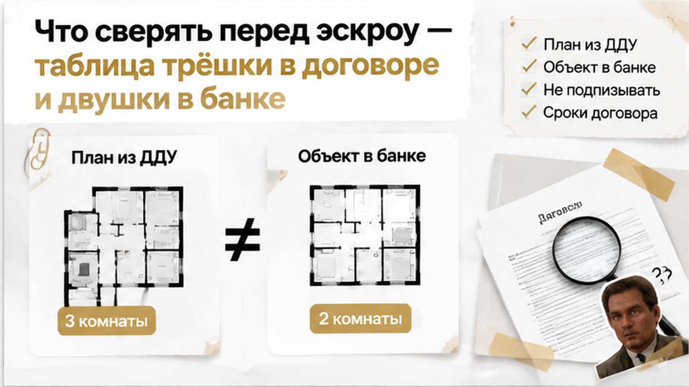

В ДДУ зафиксировали 3 комнаты, а перед открытием эскроу предложили двушку за те же деньги — сделку остановили до перевода средств. На столе в офисе продаж лежали документы на разные объекты: в договоре была трёшка с планировкой, а в банковском комплекте уже фигурировала квартира с двумя комнатами. Бронь пройдена, ипотека одобрена, следующий шаг вроде бы понятен — открыть счёт и двигаться к расчёту. Но перед подписью пришлось ответить на простой вопрос: за какую именно квартиру семья собирается платить. В таких ситуациях я сначала сравниваю подписанный договор с комплектом, который предлагают оформить теперь.
Я Святослав Шакин, The Риэлтор, Тюмень. Разбираю покупки новостроек простым языком — где можно двигаться дальше, а где сначала нужны ответы в документах. Такие разборы публикую в Telegram и MAX.

Началось всё обычно: семья выбрала трёхкомнатную квартиру, забронировала её и получила ипотечное одобрение. Затем подписала договор участия в долевом строительстве — ДДУ, и документ прошёл государственную регистрацию.
Это уже не вариант, который просто отложили в отделе продаж. С регистрации ДДУ договор считается заключённым. Поэтому любое следующее предложение нужно сравнивать с тем, что уже оформлено, а не воспринимать как очередной шаг менеджера.
В приложении к ДДУ был план квартиры: три комнаты, этаж, проектная площадь и условный номер объекта. Условный номер отличает эту квартиру от других в проекте. План вместе с остальными характеристиками описывает конкретный объект, который застройщик должен передать покупателю, а не рекламную картинку, которую можно заменить.
Для семьи разница была практической: они выбирали жильё с тремя комнатами, а не любую квартиру в пределах одобренной суммы. Одинаковая цена не делает разные планировки одинаковыми. Бронь, ДДУ и ипотечное одобрение решают разные задачи, а главный вопрос звучит так: совпадает ли квартира в следующем комплекте с той, что указана в зарегистрированном договоре.
Похожую границу между одобрением банка и документами я уже разбирал в истории, где ипотеку на новостройку одобрили, но эскроу не открыли. Одобрение само по себе не отвечает, какой именно объект в итоге будет оформлен и оплачен.

Накануне подачи заявления на открытие эскроу менеджер предложил семье другую квартиру — двухкомнатную. Площадь меньше, цена та же. В банковском комплекте перед расчётом уже фигурировал новый объект, хотя в зарегистрированном ДДУ оставалась трёшка.
Именно в этот момент обычная подготовка сделки перестаёт быть техническим продолжением договора. Меняется не реквизит счёта и не дата визита в банк, а предмет покупки.
Фраза менеджера о замене квартиры ещё не означает, что объект в ДДУ юридически заменён. По одному разговору нельзя объявить действия застройщика незаконными: нужно читать договор и смотреть, что именно предлагают подписать. Но и считать замену состоявшейся только потому, что подготовлены банковские бумаги, тоже нельзя.
Если стороны хотят заменить квартиру, это должно быть понятно из согласованного оформления. Устный переход от одного плана к другому не превращает двушку в ту самую трёшку, которая указана в договоре.
Давление создаёт не только разговор о цене. Бронь уже оформлена, ипотечное решение имеет срок, а менеджер предлагает не начинать всё заново, а подписать следующий комплект. В такой момент легко принять новые бумаги за формальность. Но подпись и деньги не должны опережать ответ: какую квартиру семья действительно согласна купить и где это зафиксировано.
Когда в ДДУ написали одно, а в документах оказалось другое, расхождение также проявилось на стадии документов. Здесь его увидели раньше — до открытия эскроу и перечисления денег.

На столе лежат два комплекта документов. В зарегистрированном ДДУ — одна квартира, а в банковских бумагах перед эскроу — уже другая. Это не техническая замена: предмет покупки изменился.
Семья не подписывает банковский комплект, не подаёт заявление на открытие эскроу и не направляет деньги под предложенную двушку. Это не отказ от жилья вообще, а остановка перед конкретным действием, пока не ясно, на какую квартиру предлагают оформить сделку.
Подготовленные менеджером бумаги сами по себе не меняют зарегистрированный ДДУ. Если стороны хотят заменить объект, нужен понятный письменный комплект: что именно меняется, какая квартира становится предметом сделки и на каких условиях. Подпись под банковскими документами не должна превращаться в способ разбираться с этим позже.
Ипотечное одобрение тоже не закрывает вопрос. Банк ещё не выдал кредит, а решение нельзя автоматически перенести на другую квартиру только потому, что цена осталась прежней: важны конкретные характеристики объекта.
Не открыть эскроу — не значит автоматически прекратить зарегистрированный ДДУ. Одновременно с остановкой платежа нужно проверить сроки оплаты, условия договора и переписку о замене. Молчание после паузы не защищает, но и согласие платить за несогласованный объект защитой не становится.
У этой истории не было удобного продолжения, где покупатель отказался от двушки и сразу получил другую трёшку. Бронь сняли, лот ушёл другому покупателю, а через 19 дней после остановки сделки закончилось ипотечное одобрение.
Эти 19 дней относятся именно к рассматриваемой ситуации, а не являются универсальным банковским сроком. Пока семья разбиралась с несовпадением квартир, решение продолжало действовать. Деньги на эскроу не поступали: семья не стала финансировать другой объект ради сохранения прежнего темпа сделки.
Бронирование, ДДУ и эскроу — разные отношения. Снятие брони не доказывает, что договор участия уже расторгнут, а ушедший лот не означает автоматически, что стороны больше ничего друг другу не должны. Нужно смотреть условия конкретного договора и переписку.
Нельзя заранее обещать семье возврат платы за бронь или утверждать, что её обязательно удержат: это зависит от условий бронирования. То же самое с судьбой ДДУ — для вывода нужен весь комплект документов.
Ипотечное решение истекло, денег под другой объект нет, а статус зарегистрированного договора требует отдельного разбора. Семья потеряла время и возможность продолжить покупку на прежних условиях, но не заплатила за квартиру, которую не соглашалась покупать.
Остановиться — не значит получить идеальный результат: после паузы могут уйти бронь, лот и банковское одобрение. Но подписать документы под давлением заканчивающегося срока — не единственный способ сохранить свои права.
В ДДУ уже записана трёшка, а перед эскроу предлагают двушку за те же деньги: вы бы подписали банковские документы или остановили сделку, даже рискуя потерять бронь и ипотечное одобрение?

Эскроу защищает деньги, но не отвечает на главный вопрос: за какую именно квартиру покупатель платит. Он не превращает двушку из банковского комплекта в трёшку, указанную в зарегистрированном договоре. Счёт открывают после регистрации ДДУ, но банковская процедура не исправляет расхождения между документами.
Бронь, ДДУ и эскроу — разные этапы. Снятие брони и отсутствие денег на счёте сами по себе не отвечают, прекращён ли зарегистрированный договор и что стороны должны друг другу. Документы нужно смотреть единым комплектом. В ситуации, когда застройщик сменил юридическое лицо, а дольщикам прислали новый ДДУ, я разбирал ту же границу: новое оформление нельзя считать формальностью.
Предложить другую квартиру и юридически заменить объект — не одно и то же. Если стороны договариваются о замене, её нужно оформить письменно, а банковские документы привести в соответствие с согласованным объектом.

Начните с двух документов на одном столе: зарегистрированного ДДУ с приложением-планом и банковского комплекта. Рекламная картинка не заменяет приложение к договору. Сравнивать нужно одну и ту же квартиру сразу по нескольким признакам.
| Что сравниваем | Трёшка в зарегистрированном ДДУ | Двушка в банковском комплекте |
|---|---|---|
| Количество комнат и план | Три комнаты, приложена планировка | Предлагаются две комнаты — план не соответствует исходной квартире |
| Проектная площадь | Указана в договоре | Предлагается меньшая площадь |
| Условный номер, корпус, этаж | Реквизиты берём из ДДУ и приложений | Каждый реквизит нужно сверить; совпадение нельзя предполагать |
| Цена | Цена по подписанному договору | Та же цена предложена за другой объект |
| Основание для оформления | Зарегистрированный ДДУ на исходную квартиру | Для замены нужен новый согласованный и надлежаще оформленный комплект |
Число комнат нельзя спрятать за разговором о допустимом изменении площади. Отклонение метров в пределах условий договора не даёт права вместо трёхкомнатной квартиры предложить двухкомнатную. Одинаковая стоимость тоже не делает объекты одинаковыми.
Сведения о проекте и историю изменений можно сопоставить с данными ЕИСЖС на НАШ.ДОМ.РФ. Если не сходятся план, условный номер или характеристики, нужны письменное объяснение и проверка документов. Обещание менеджера «потом всё поправить» не заменяет согласованный комплект.
Для разбора понадобятся договор бронирования, исходное предложение по трёшке, переписка о замене и решение банка с датой окончания одобрения. Возврат платы за бронь зависит от её условий. В другой ситуации я показывал, как в ДДУ обещали чистовую, а на приёмке оказались голые стены: бумагу нужно сверять с тем, что предлагают и передают фактически.

Если выбираете новостройку в Тюмени, оставайтесь на связи в Telegram или MAX. Я разбираю такие развилки простым языком: где достаточно уточнить детали, а где подпись лучше отложить до проверки документов.
Для меня здесь важна не победа над менеджером и не драматичная отмена сделки. Семья остановилась до денег, хотя потеряла время, бронь и возможность продолжить покупку на прежних условиях. Это не финал без потерь, но дорогое решение не стало ещё дороже из-за попытки успеть любой ценой.
Перед открытием эскроу положите приложение-план из зарегистрированного ДДУ рядом с объектом в банковском комплекте. Если комнаты, площадь или условный номер не сходятся, остановите подписание и перечисление до выяснения причин. Одновременно проверьте сроки и обязательства по действующему договору: бронь не заменяет ДДУ, а эскроу не исправляет несогласованную замену.